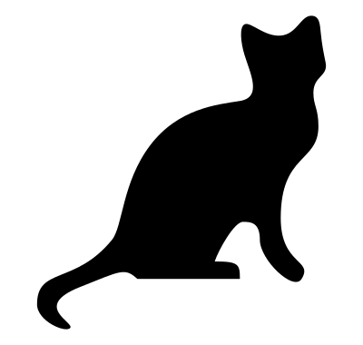

Exemplo de Título
Isto é texto normal. Para mudar de parágrafo, pule uma linha.
Em texto normal, você pode usar itálico, negrito, código e comando.
Como você pode ver nesse exemplo, o modo de código é para ser usado em texto de
código-fonte. Quando você tenta escrever texto normal, efeitos estranhos podem
acontecer, como essa cor diferente no "o" com acento agudo.
Você também pode usar \(\LaTeX\), se souber. Tanto no meio (\(\sum^n_{i=1}i\)) de parágrafos, quanto em parágrafos próprios centralizados:
\[\sum^n_{i=1}i.\]
Adicionalmente, também pode criar
listas
não-ordenadas,
assim como
listas
ordenadas.
Finalmente, também pode criar
print('código em parágrafo destacado,')assim como
comando em parágrafo destacado.Nesses dois casos, espaços em branco e quebras de linha serão respeitados.
Exemplo de subtítulo
A notação para criar um link é bem simples.
A notação para criar

é bem parecida. Espera-se que todas as imagens estejam na pasta img.
A notação para criar
um aviso
é mais simples ainda.
Para terminar, só falta mostrar como criar uma pausa.
continuar ou terminar
That's all Folks!